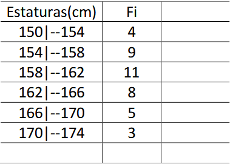

O que é?
A estatística é um ramo da matemática que estuda a coleta, organização, análise e interpretação de dados. No ensino médio estudamos a estatística descritiva, que é a parte da estatística que estuda como resumir a pesquisa com tabelas e gráficos. Também existe a estatística inferencial, que só é estudada no ensino superior.
Termos da estatística
- População: é o conjunto de todos os elementos que estão sob análise.
Amostra: parte da população.
Pesquisa Qualitativa: é uma pesquisa com foco em qualidade, preferências do analisado. Normalmente é dado em forma de texto.
Pesquisa Quantitativa: é uma pesquisa com foco em quantidade, normalmente é dado em forma de números.
Frequência Absoluta: é o número de vezes que um valor aparece em uma pesquisa.
Frequência Relativa: é a frequência absoluta dividido pelo número de elementos da amostra.
Frequência de Classes: número de vezes que um intervalo de valores aparece num conjunto de dados. É dado por um intervalo aberto-fechado, ou seja, se tivermos 3|-5 nossa classe começa em 3 e termina em 4,9.
Média Aritmética Simples
É a média básica que aprendemos no fundamental, é dada pela soma dos elementos, dividido pela quantidade de
elementos. Na formula: xi = dado, n = quantidade de dados.
Média Ponderada
Similar a média aritmética simples, porém apresenta pesos. Nessa média multiplicamos o dado pelo peso e dividimos pela soma dos pesos.
Moda e Mediana
- Moda: Termo que mais aparece em uma sequencia de dados.
Mediana: Termo do meio de uma sequencia de dados. Na mediana é obrigado a organizar os dados em ordem crescente ou decrescente. Se o numero de dados for ímpar a mediana é o termo "do meio". Se o numero de dados é par, temos que fazer a média dos dois dados do meio.
Exercício Exemplo
Calcule a média ponderada, mediana e moda dos dados fornecidos abaixo:
Fonte: Adaptado do material da professora Valéria Espindola Lessa.
Para a média ponderada temos que multiplicar cada dado pelo seu peso e dividir pela soma dos pesos:
↓
Logo, temos que a média ponderada é 161cm. Para a mediana, temos que encontrar o numero do meio. A sequencia já está em ordem crescente, então não precisamos organizar. Temos como total de elementos a soma dos fi:
Como metade do total temos:
Como a frequencia que apresenta o 20º elemento é 158-162, temos que a mediana é 160cm.
Agora para a moda temos: A frequência que mais se repete é a 158|-162, logo nossa moda está ali. Fazendo
a média entre 158 e 162 novamente temos que nossa moda é igual a mediana, 160.
>>Proximo Conteúdo
>>Página de Conteúdos